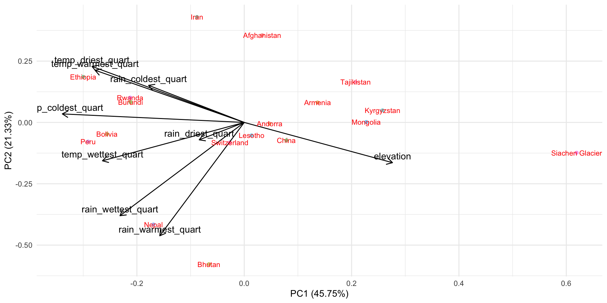

library(tidyverse)
library(janitor)
library(here)
library(readxl)
library(ggfortify) # for PCA
library(patchwork)To access data, html and Rmd files:
- https://github.com/elmeraa/244-Assignment1
- you will find world countries data in the “data” folder
- you will find the Rmd and html files as “a1-task2” in the “src” folder
Introduction:
- This scaled PCA analysis explores the relationships and loadings between 18 countries and variables: elevation (> 1200 m above sea level), precipitation of coldest quarter (mm), precipitation of driest quarter (mm), precipitation of warmest quarter (mm), precipitation of wettest quarter (mm), mean temperature of coldest quarter (degC), mean temperature of driest quarter (degC), mean temperature of warmest quarter (degC), and mean temperature of wettest quarter (degC). Dataset is provided by @zander_venter on Kaggle with data obtained by Google Earth Engine. (More information at: https://www.kaggle.com/zanderventer/environmental-variables-for-world-countries/data & https://earthengine.google.com/)
Load packages
Read in ‘world_env_vars.csv’
world_df <- read.csv(here("posts", "2021-02-23-pca","world_env_vars.csv")) %>%
clean_names()wrangling and PCA
world_pca <- world_df %>%
select(elevation, ends_with("_quart")) %>%
filter(elevation > 1200) %>%
drop_na() %>%
scale() %>%
prcomp()
world_pcaStandard deviations (1, .., p=9):
[1] 2.0291856 1.3855556 1.3181932 0.8171926 0.6272059 0.3402524 0.1792816
[8] 0.0994290 0.0775711
Rotation (n x k) = (9 x 9):
PC1 PC2 PC3 PC4 PC5
elevation 0.3773162 -0.22399107 0.033034623 -0.61413644 0.35607180
rain_coldest_quart -0.2434664 0.20650462 -0.582855968 -0.15579242 0.24658534
rain_driest_quart -0.1146605 -0.09686381 -0.697043121 0.25292269 -0.09145894
rain_warmest_quart -0.2150023 -0.63115170 -0.020829345 -0.03516178 -0.30985444
rain_wettest_quart -0.3162501 -0.51929537 0.004911287 -0.24354957 -0.17884450
temp_coldest_quart -0.4630113 0.04754973 0.024175082 -0.24000416 0.36549647
temp_driest_quart -0.3875034 0.31191430 0.025864505 -0.50991035 -0.18110083
temp_warmest_quart -0.3797402 0.29085047 0.326382687 0.08113646 -0.31973443
temp_wettest_quart -0.3608719 -0.21362489 0.255110707 0.38710314 0.63830509
PC6 PC7 PC8 PC9
elevation 0.23335774 -0.47943432 0.07981926 0.10832506
rain_coldest_quart -0.59388842 -0.26780837 -0.22049161 0.01555457
rain_driest_quart 0.55760952 -0.15357434 0.28596342 0.05457187
rain_warmest_quart 0.07059181 -0.17814346 -0.60974535 -0.22188708
rain_wettest_quart -0.34503501 0.15751473 0.57748261 0.24828639
temp_coldest_quart 0.33809972 0.41158162 -0.30778561 0.46167376
temp_driest_quart 0.19762041 0.05313718 0.16857881 -0.62352171
temp_warmest_quart 0.06605625 -0.62760903 0.02635032 0.39612322
temp_wettest_quart 0.01230044 -0.22841686 0.18470670 -0.33960278world_complete <- world_df %>%
drop_na(elevation, ends_with("_quart")) %>%
filter(elevation > 1200)Biplot output
autoplot(world_pca,
data = world_complete,
loadings = TRUE,
colour = 'country', alpha = 0.5,
loadings.label = TRUE,
loadings.colour = "black",
loadings.label.colour = "black",
loadings.label.vjust = -0.5
) +
scale_colour_discrete(name = "Country") +
theme_minimal() +
theme(legend.position="none") +
geom_text(aes(label=country), col = "red", size = 3)
#screeplot(world_pca, type = "lines")
#world_pca$rotationSummary:
- The analysis indicates mean temperature of driest quarter and mean temperature of warmest quarter are strongly positively correlated in multivariate space.
- Precipitation of warmest quarter is minimally correlated with elevation.
- Lastly, elevation is negatively correlated to mean temperature of driest quarter, mean temperature of warmest quarter, and precipitation of coldest quarter.
- PCA analysis also indicates, overall, in multivariate space, countries Rwanda and Burundi are very similar – as well as, countries such as Peru and Bolivia.